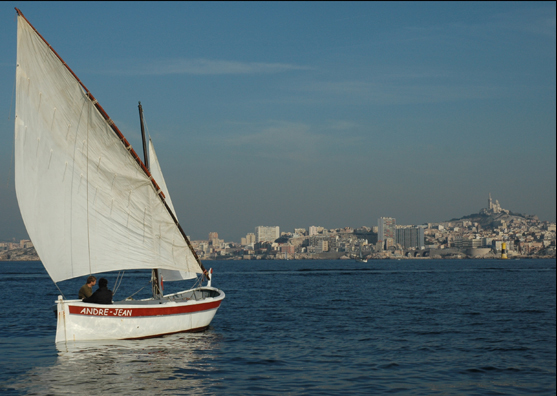
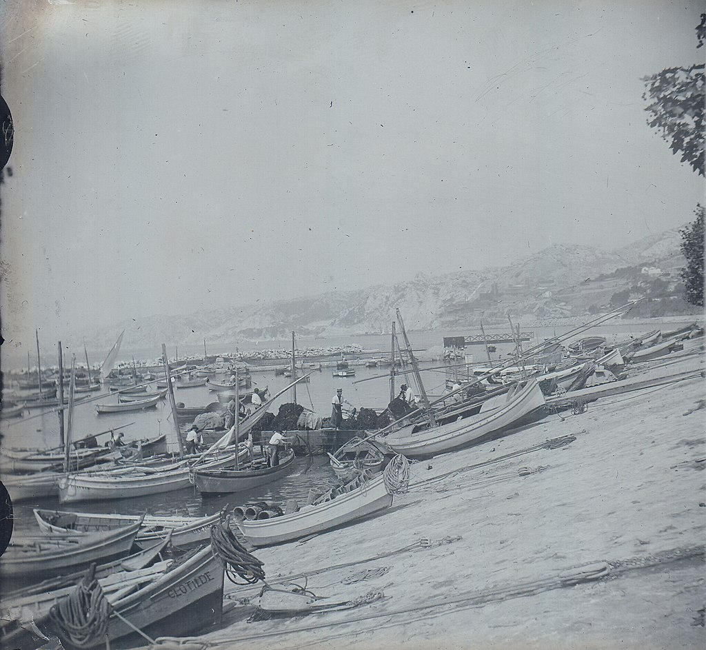

Les falaises et grottes de L'Estaque étaient occupées par l'être humain durant la préhistoire, autour du lit de rivières, « les riaux », comme en témoignent les vestiges retrouvés au XIXe et xxe siècles dans deux grottes voisines baptisées Riaux 1 et Riaux 2, situées à environ 60 mètres d'altitude. Ces sites archéologiques ont depuis été détruits par l'extension urbaine. Quelques traces d'activité humaine datant du Paléolithique (plus exactement du Magdalénien, soit entre 17 000 et 10 000 ans av. J.-C.) ont été retrouvées. Elles correspondent à une période dite de chasse et cueillette. Des archéologues, dont Max Escalon de Fonton, ont découvert des silex taillés (lames, grattoirs), des ossements d'animaux (bouquetins, lynx, ours, loup), un collier en coquillages perforés.
Le hameau de pêcheurs et paysans :
L'Estaque est un ancien hameau de familles de pêcheurs et d'agriculteurs, devenu ultérieurement un village. Jusqu'au début du xixe siècle, les habitations étaient rassemblées en bordure de mer, le long d'une jetée de rochers et de bancs de sable, dans l'actuel quartier Estaque-Plage. Son port est un havre naturel abrité des vents et il servait d'abri marin ou lieu d'escale pour les pêcheurs de la région.

L'activité de pêche :
La pêche à l'Estaque était basée principalement sur la sardine, secondairement le thon (seinche), le maquereau, la langouste et les poissons de roches, puis l'oursin, la crevette et les coquillages. Au moins depuis le XVIIIe, les pêcheurs exploitent une madrague mouillée au milieu de l'anse de L'Estaque, un filet de pêche fixe destiné aux thons ; la madrague est démontée en 1859 en raison de la diminution des prises (la madrague de Niolon subsistera jusqu'au milieu du XXe siècle).

La seconde guerre mondiale :
Durant la Seconde Guerre mondiale, les usines de L'Estaque participaient à l'effort de guerre allemand. Quelques sabotages ont été réalisés durant la guerre, notamment « un incendie volontaire à l'usine Khulmann et deux explosions de transformateurs électriques à celle de la Coloniale », mais les usines et habitations voisines sont aussi sous le risque de bombardements alliés. Dans le cadre de la stratégie du mur de la Méditerranée, des casemates et batteries anti-aériennes avaient été construits dans les collines autour de L'Estaque, et les structures du port de L'Estaque avaient été minées. Le 23 août 1944, quelques déserteurs Polonais cachés à L'Estaque furent exécutés par les Allemands. À la suite de la Bataille de Marseille, L'Estaque est libéré en août 1944 par des goumiers Marocains, qui réduisent notamment le blockhaus du boulevard Fenouil.
Les années 1990-2000 :
À partir des années 1950, les quartiers nord de Marseille sont durement touchés par la récession économique, le chômage et les conséquences de la décolonisation. L'activité de pêche et l'industrie des tuiles disparaissent de L'Estaque. Les autres industries (cimenterie et chimie) emploient essentiellement une main d'œuvre non qualifiée, issue de l'immigration. Les ouvriers s'entassent à proximité de leur usine, dans des logements parfois insalubres ; la misère est telle qu'apparaissent